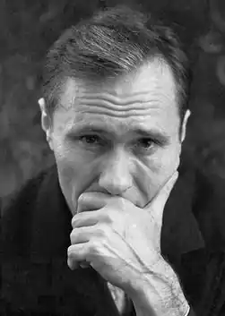
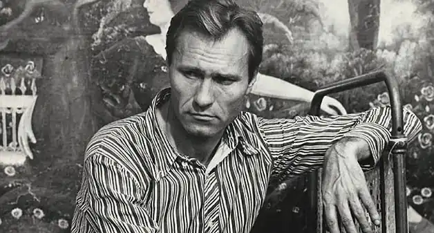

Василь Шукшин народився в селі Зростки Бийского району Алтайського краю в селянській родині. Батьки його вважалися селянами-одноосібниками, або середняками. Глава сім'ї — батько, Макар Леонтійович Шукшин — працював механізатором на молотилках, в селі користувався заслуженою повагою. Але незабаром батька Макара Леонтійовича заарештували. Мати, Марія Сергіївна, залишилася без годувальника з двома дітьми на руках. Вона вийшла заміж повторно, за односельця Павла Куксіна.
Вітчима свого Павла Куксіна Василь Шукшин пізніше згадував як людину рідкісної доброти. Почала налагоджуватися життя, як грянула народна війна. Вітчим Шукшина пішов на фронт, а через рік принесли похоронку.
І так, тринадцятирічний Василь Макарович став головним чоловіком і годувальником в будинку. З 1945 по 1947 роки він навчався в Бійському автомобільному технікумі, але закінчити його він так і не зумів — щоб прогодувати сім'ю, довелося кинути навчання та влаштуватися на роботу. А першим місцем роботи Шукшина став трест "Союзпроммеханизация", який ставився до московської конторі. Влаштувавшись туди в 1947 році в якості слюсаря-такелажника, Шукшин незабаром був направлений спочатку на турбінний завод в Калугу, потім — на тракторний завод у Володимир. У 1960 році Василь Шукшин закінчив ВДІК. Його дипломна робота — короткометражний фільм "З Лебединого повідомляють" — залишилася непоміченою. Подивившись його, багато колеги Шукшина визнали фільм несучасним, в якійсь мірі навіть нудним. Але при цьому, акторська кар'єра Шукшина в ті роки складалася набагато успішніше, ніж режисерська. Шукшин знявся у фільмі "Два Федора", після чого запрошення зніматися посипалися на нього з усіх сторін. Буквально за короткий період Шукшин знявся в цілому ряді картин: "Золотий ешелон" (1959), "Проста історія" (1960), "Коли дерева були великими", "Оленка", "Мишко, Серьога і я" (1962), "Ми, двоє чоловіків" (1963) і ін З третього курсу він став розсилати свої розповіді по всім столичним редакціям в надії, що якась із них зверне увагу на його праці. В 1958 році в журналі "Зміна" було опубліковано його оповідання "Двоє на возі". Однак ця публікація пройшла не поміченою ні критикою, ні читачами, і Шукшин на час перестав надсилати свої твори по редакціях. Але вже в 60-х один за одним почали виходити в світ літературні твори Шукшина. Серед них: "Правда", "Світлі душі", "Стьопкіна любов" були надруковані в журналі "Жовтень" — в 1961 році. Твір "Іспит" — у 1962-му; "Колінчасті вали" і "Леля Селезньова з факультету журналістики" також з'явилися в журналах у 1962 році. У 1963 році у видавництві "Молода гвардія" вийшов перший збірник Ст. Шукшина під назвою "Сільські жителі". В тому ж році в журналі "Новий світ" було надруковано два його розповіді: "Класний водій" і "Гринька Малюгін" (цикл "Вони з Катуні"). На основі своїх оповідань "Класний водій" і "Гринька Малюгін", опублікованих у 1963 році Шукшин незабаром написав сценарій свого першого повнометражного фільму "Живе такий хлопець". Зйомки картини почалися влітку того ж року на Алтаї. Картина "Живе такий хлопець" вийшла на екрани країни в 1964 році і отримала схвальні відгуки публіки. Хоча сам Шукшин був не дуже задоволений його прокатною долею. Фільм з незрозумілих причин записали в розряд комедій і, відправивши у тому ж році на міжнародний кінофестиваль у Венеції, виставили його на конкурс дитячих та юнацьких фільмів. І хоча картині присудили головний приз, Шукшин таким поворотом подій був не задоволений. Василю Макаровичу навіть довелося виступити на сторінках журналу "Мистецтво кіно" з власним поясненням до фільму. А тим часом творча енергія трансформується Шукшина в цілий ряд нових літературних і кінематографічних проектів. По-перше, виходить нова книга його оповідань під назвою "Там вдалині...", по-друге, в 1966 році на екранах з'являється його новий фільм — "Ваш син і брат", який через рік удостоюється Державної премії РРФСР імені братів Васильєвих. Думки про Росію призвели Шукшина ідеї зняти фільм про Степана Разіна. Протягом всього 1965 року Шукшин уважно вивчав історичні праці про другий селянській війні, конспектував джерела, вибирав з антологій потрібні собі народні пісні, вивчав звичаї середини і кінця XVII століття і здійснив ознайомчу поїздку по разинским місцях Волги. В березні наступного року він подав заявку на літературний сценарій "Кінець Разіна", і ця заявка спочатку була прийнята. Зйомки фільму намічалися на літо 1967 року. Шукшин був цілком захоплений цією ідеєю і заради її перетворення в життя закинув всі інші справи: він навіть припинив зніматися в кіно, хоча його кликали до себе на знімальний майданчик багато відомі режисери. Проте все виявилося марним — висока кінематографічне начальство раптово змінив свої плани і зйомки фільму зупинило. При цьому були висунуті наступні аргументи: по — перше, фільм про сучасності більш важливий на даний момент, по-друге, двосерійний фільм історичну тему зажадає величезних грошових витрат. Таким чином, Шукшину дали зрозуміти, що зйомки фільму про Разіна відкладаються. Останній рік життя Шукшина складався для нього на рідкість вдало як в творчому плані, так і особистому. 2 жовтня 1974 року Василь Макарович помер від серцевої недостатності. Похований на Новодівичому кладовищі.